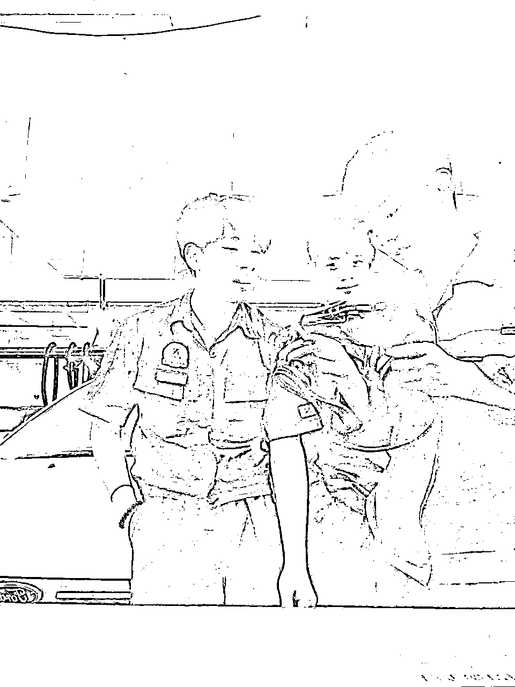
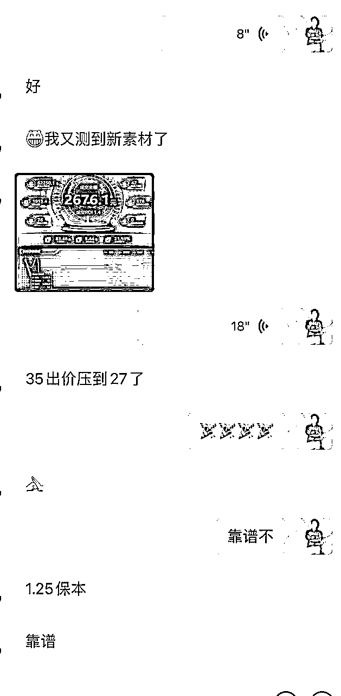

来源：https://tumg99gimq.feishu.cn/docx/AI0jdCkmcoFd9pxU0zyc8go4nBh
大家好，我叫何岷，97年白羊老男孩。从一个月入2000的底层洗车工开始，一路摸爬滚打、踩坑无数，跌了爬，爬了跌，终于走到了今天的位置。目前公司正在操盘视频号的挂车付费投流项目，每月消耗在100~200万之间，最高曾三天创造了84万+纯利润，也算在这个投放行业拿到了些自认为还不错的成绩。虽未到年入千万，但目前年入百万还是绰绰有余的，江湖号称“视频号投流，素人实拍不死号流派”开创者，视频号投流挂车第一博主。
敲下这些文字，回首来时的路，真的让我无比珍惜目前所拥有的一切，也无比感激一路上陪伴我的兄弟们，和那个不曾放弃的自己。另外，我真的要特别感谢合伙人小熊和好兄弟阿皓，感谢他们介绍我进了生财有术，让我在这个圈子里，遇到了项目、挣到了钱、还结交了前行的盟友。
下面，我想将我这个普通人的普通致富路分享给屏幕前的你，不求能给你多少启发，只希望这些文字能在你前行的创业路上，给你一些力量，给你一些支撑，给你一些信念......另外，我也把自己跑通的视频号带货投流的项目实操分享给大家，欢迎感兴趣的小伙伴来一起交流～
从底层爬上来的人都知道囊中羞涩的滋味，因为憋着一口气，因为不服输，所以创业路上的我，异常坚定！在正式分享自己的经历之前，我想先把我的座右铭分享给你们，如果此刻屏幕前的你们也一腔热血无处撒，请务必不达目的不罢休！
座右铭：心系创业成功路，目的不达誓不休，他日若遂凌云志，敢笑马云不丈夫？
我出生在贵州一个小县城，德江县。大家听到贵州，第一反应会是什么？全是山？没有路？ 还是穷乡僻壤？
没错！贵州大部分地区是很穷的，整体经济环境并不好。我的家庭也是个极其普通的平凡人家，全家人一年到头都在为碎银几两拼命。更让我们雪上加霜的是，我的父亲以前是个赌鬼，还欠了一屁股账。所以，父母在我还没记事的时候就离婚了。我妈一个人带着我，边工作边照顾我，一直到我上技校。
初中毕业之后，我不忍再继续拖累妈妈，毅然决然早点开始工作，给家里减轻负担。于是，我开始网搜各种技术学校，我深入了解过新东方厨师、蓝翔挖掘机、电子商务、万通汽修...最后在朋友的建议下，去报了万通汽修，再加上男孩子本身也比较喜欢汽车，所以看到有汽车改装这个技术后，我感觉好像找到了人生的方向，准备把一生都献给技术...（现在看看，真是少年单纯！）
后来，当妈妈给我攒齐学费，我就一个人从温州杀到了合肥，当时真的不知道哪里来的勇气，在还是孩子的年纪，孤身一人跑那么远。没出过远门的我，几经波折才找到学校，办好入学后，就开启了我的学习之路。
天将降大任于斯人也，必先苦其心志，劳其筋骨。从学校到社会，老天给我的磨砺，那是一点点都没少......入学第一个学期，就经常被班主任骂”太浮躁，喜欢表现“，说实话，那些话对那时的我来说，还蛮打击的，慢慢的我开始少说话、少表现，封闭自己的同时也越来越自卑。经常会想：农村出身、全身毛病、毫无特长......一手白牌的我，到底拿什么去跟别人比。如果你经历过这种否定的时刻，那我想你一定明白，当人陷入这种情绪无底洞时，根本看不到丝毫光亮，直到......
遇到了第一个给我光亮的人——我的思想开导家”食堂大姐“。大姐注意到我变得不爱说话，就主动找我聊天，还鼓励我要去做自己，那是第一次感受到来自陌生人的关心，倍感温暖。后来，我就主动到后厨帮大姐打下手，我们越来越熟，聊的越来越多，我也慢慢做回了自己。
人嘛，有了自信，就有了胆子，就敢做事。于是，我决心要去多接触一些圈子，多去历练自己。我开始慢慢接触学生会的圈子，进入了生活部，一直都很努力的为学生会做事。后来部长说要选组长，我就更努力了，可最后却是我旁边一个说话很少的朋友当选了。18岁那个一直迫切想证明自己的小孩，真的很委屈！内心一直咆哮：”工作我做的最多，做事我也最积极，最后却连名字都没提一下，世界真的好不公平“！后来，我明白了，事得踏实做，但也要学会跟对人，学会处关系。
两个月后，不甘心的我换了一个部门，加入了学生会组织部。人也开始学聪明些了，在正常的工作之外，会慢慢的接触部长、拍马屁、请吃饭......这样做了一个月，发现这个路子有奇效。部长不仅很多事都让我做，有什么好玩的也叫上我，就这样我直接变成了大队长，管理所有组长，当时真的无比开心。因为，渴望认可的小孩终于证明了自己的价值。再后来，就开启了我的学生会晋升路，变成了部长，然后是副主席。说这么多学校经历，并不是废话多，而是想告诉大家一个深刻的现实：圈子真的很重要！向上社交绝对是你成长的高效路径。
毕业后，我从工资2000的洗车工开始实习，每天就是7点起床、开早会、8点工作，每天的不停地洗车。那个夏天，每天要洗80多台车，晚上回去两条腿都是没有知觉的，有时候累的连洗澡的时间都没有，倒床就睡。日复一日，循环往复，生活没有一点光彩，前途也是一片茫然......

终于熬完了这个魔鬼实习，已经是两个月之后了，我马不停蹄的回到了温州，在家里足足躺了一个星期，才缓过来。在母亲的念叨下，我找了一个喷漆学徒的工作，主要是因为当时这个行业老师傅的工资比较高，但汽车漆对身体伤害很大。不过作为年轻人哪会听得进去这个，一心只想着怎么改善家庭条件。
接下来就是每天跟着师傅学，一个月500块钱工资，但只要能学到技术，我也愿意吃点苦。可惜第一个老师不愿教，每天就是让我干点杂活，买买水、买买烟、递递工具，喷漆的时候却连漆房都是不让进。两个月过去，什么都没学到，我开始焦虑了。我是来学东西的，如果一年都学不会，那岂不是白白浪费一年吗？我该怎么办呢？要是离职不干了，又该干什么呢？
后面几天，我离职的想法越来越严重，脑袋里有了想法，动了念头，真的很难抹去。也不愿意内耗，就一不做二不休，辞职！第二天下班路上，就顺路找了个学徒工，第三天我就不干了。
虽然换了师傅，但还是一样，人家不肯教。不过好在这个师傅很懒，不怎么自己干活，都让他招的中工去干。中工算不错的，什么都会一点，给他一个活也能干好。当时我灵光一动，想起了学生会晋升的那段经历，所以我没事就跟中工一起玩，买水、买烟、打王者......把在学校那招用了遍，总结就一个字“舔”。熟悉了之后，我就开始抢活干了，他干啥我都让他歇着，在旁边看着我弄，他也很乐意啊，本来就是人家请过来当苦力的，现在又有我这样傻不拉几的家伙抢着干活，他肯定也开心。
苦心人天不负，终于，在两个月的打磨下，我出师了！然后，头也不回的直接换了一家，当中工去了，工资直接从500变成了4500。接下来几个月，通过勤劳换来了老板的青睐，工资比店里的老师低，干活跟老师干的差不多，后面三个月我就直接变成了店里的老师，还带了几个徒弟。但每个徒弟半年左右就全部出去单干了，为什么呢？我撵走的。因为我深知”我所经历的，一定是他们正在经历的“。所以，我希望他们也都能快速学会技术，然后挣更多的钱，为自己的家庭出一份力。
现在回看走过的路，说实话，我真的真的很感谢那个努力、勤奋、倔强、不服输的自己。但凡当时愚钝一点、老实一点，都不会有今天的自己，也不会和大家分享了。打工的这一路上，我不断意识到自己认知的匮乏，但因为心里有股劲，就想成长，想赚钱，赚大钱，所以不知不觉中，心里也埋下了创业的种子。
可能很多朋友会好奇：一个洗车工是怎么跑到互联网创业的？怎么说呢，是机缘巧合，也是自己努力争取。
疫情那两年，我曾和表哥一起去广州开口罩厂创业，但后来竹篮打水一场空，第一次创业宣告失败！但这一次的经历是真的彻底打开了我的认知，还认识了一些身价过亿的集团大老板。因为看到过，所以不甘心，之后我一直不停的思考：接下来的路怎么走呢？我是继续做喷漆师傅？还是去开启新的冒险？如果我回去做喷漆，一个月1万，饿不死也富不了，而且天花板有限，想要突破简直太难了。想到这，便一心决定不能再去打工了，不管再怎样，我都要创业！我得自己干！
所以，我开始去抖音、百度等各个平台，去搜一个人能做的项目，找了很久，发现网上都是吹水的，根本不会讲核心。就想着去报一个课程，找人学算了。当时直播很火，就想着去学学，然后创业做直播，脑子一热就报名了，把身上仅有的一万五千多，一半都拿出来交学费了。当时心里就想着，学完就算去上班，也不至于饿死吧。钱一交完，第二天就开始学习了，一个班有四十多位同学，每天九点上课，五点下课，听课做笔记，光笔记就写了满满一本子，生怕学不会，钱打水漂了。（说实话，上学都没那么认真过）
一个星期学完，感觉自己很牛了，和几个同学约好，先去找个直播公司实习一下，结果很多同学去干了中控。原因是人家说太水了，做运营不要。就我一直一家一家面试，面了很多家，最后在一家做童装的公司面试过了，然后开始了我的直播生涯，把我在培训班学的一系列套路，全用了一遍，鱼塘起号、付费起号、七天螺旋起号......折腾了很多方式，一个都没起来。后来家里老人出了一点变故，请假离职回到了温州，之后就再也没回到广州了。
后面有个初中同学知道我在做直播，打电话过来说有一个技术可以做无人直播，让我们一起做。我们一拍即合，当时无人直播很火，有人一天能卖几百万，佣金也有大几十万，我好像又看到了希望。正好也在温州，就干吧，赶上风口，也终于自己创业，拿到一点点小结果。再后来，就是平台打压无人直播，封号严重，就撤出了无人直播。期间也花钱学习了几个项目，像小红书无货源，公众号爆文等等，但一个都没有做起来。
直到23年年初，合伙人小熊说："今年视频号投流带货是一个风口，有人一天赚十几万，准备去报一个课程，要不要一起去"？当时沉浸在抖音的逻辑里面，视频号是什么我都不知道，后面才知道是微信视频号，而且当时就觉得一天赚十几万感觉太假，现在回想才知道是自己眼界小了。幸好当时刚好过完年，在想今年该做什么，于是我就答应他说一起去学习，一人三万的学费，学三天，当时学完，他建议我和阿皓（也是生财圈友）先一起在杭州研究。
于是我就留在了杭州，两个人在写字楼租了一个办公室，场地在拱墅区高巨时代。然后开始研究如何选品、如何跟品、如何投流、如何制作素材......当时的玩法就是纯搬运混剪，也算简单，就是需要不断选品和测品。我们一天得选8个品，一个品三个素材。后面剪辑忙不过来，又招了两个剪辑，一人分配一个。每天上品、测品、投流，早9点到公司，晚1点回家，有问题就问学习机构，就是这里得吐槽一下：这个机构都是小客服回信息，一点内容都不懂，非常官方，导致每天都在亏钱，虽然不多，但是就是很憋屈。
好在我们做好了搭建账号的准备，坚持20天，终于出了第一单，那是晚上10点03分，虽然投产微微小正，但真的很开心，毕竟也算是0-1了。
有了这个微妙的希望，我和阿皓后面便更勤劳的干着，终于又在第三个月，爆了第一个品和素材，是一款素颜霜，标价1瓶139.9，两瓶159.9，而成本加上快递是10.5元，利润有百元。也成为了公司内现象级的投流案例，三天利润84万左右，自经无人超越。
这个品是广州一个大哥告诉我们的，他在学习的时候正好坐我们旁边，那时候问他怎么起量这么难，他说打美妆比较好，利润比较高，于是我们花了半个月一直在打美妆的品。结果真的爆了！！！特别特别感恩，当时亲自跑到广州拜访感谢！因为相比于挣到钱，更开心的是你把事成功了，他让你从此有了希望！所以，朋友们，一定要多去学习，去结交大佬，别人一句话真的可能就会成为你的契机。
回到项目本身，看到消耗的金额，很多朋友可能会问：当时有那么多钱去投入吗？其实当时身上就10万块钱，但是起量的时候是用钱换钱的事情，砸锅卖铁也得上啊，当时身边的朋友、亲戚，能借的钱都借了一个遍。好在合伙人本来就是做抖音投流的，也有点积蓄，给我拿了百来万冲进去。
当时一整夜一整夜的不睡觉，连着在工作室三天三夜，后面短视频直接就不消耗了，几个账号也封的差不多了。收工后，整整睡了两天才缓过来，恢复过后干活也有劲了。再到后面又招了几个剪辑，做这个事情，几个月期间陆陆续续的小爆了几次都是几十万的GMV。
但不幸的是，从2023下半年的7月份开始，混剪技术被平台打压越来越严重，理由千奇百怪：“画风不统一”、“短视频挂车掉权益”等等，一天能封几十个账号。当时想着这个项目是不是要黄了？这个项目的红利是不是即将过去？好不容易搭建起来的团队难道要解散吗？
后来跟很多圈子的一些同行交流，都说想要退出了，我也慢慢有点失落，但还是想要继续尝试一下。因为我始终相信，视频号的风一定还在，于是在失落半个月之后，我又开始研究平台公开的各种规则，通宵的去看，去查阅。
后来终于找到了为什么封号的原因！画风不统一主要是因为我们最开始过内容规范的时候，发的十条视频都是关于风景、搞笑的一些段子、或者是我们的生活随拍等等，就是没有把这个账号的属性定位。
因为当时视频号平台逐渐规范化，很多规则更新的比较快速，他需要优质的达人创作者。于是我开始自己带着团队实操，先从养号开始，把之前过规范的内容先给他替换掉，我们自己拍摄一些产品的短视频素材，把我们要做的产品买样品回来自己拍摄，然后加一些介绍产品的介绍。
测试了一段时间，发现好像真的有效果，于是开始矩阵去做这种账号。这时候很多同行经常会打电话给我，问我有没有研究出来新的方法，我也乐此不疲的跟大家分享。
又开始了一轮打品，测试了半个月不到，小赚了几万块钱，紧接着其中有些账号陆续违规封禁，原因还是因为画风不统一。我人都麻了，接近那种崩溃边缘，真的很想把电脑砸了，手机砸了！刚开始突破一个难关又开始了压制。问题到底出现在哪？
又是一场彻夜难眠......我在想：画风？画面风格？统一？那我固定一个场景去拍摄不就好了？想到就立马行动！
尝试着在视频画面里面摆放一个固定的产品，虽然还是会判定违规，但是把主页截图以及我们拍摄的场景拍摄保存下来，然后违规之后就去申诉，还真的有奇效，很多账号都可以用这种方法申诉回来。那种遇到问题克服之后喜悦跟自豪的心情，真的是溢于言表的。
再到9-10月份期间，之前所有新的方法又开始失效了，各种违规就出来了，要么就是不加热，要么就是画风不统一，要么就是过审素材加热一会就被退回，说是硬广内容，要求真人出镜讲解产品。我看到广场上刷到的一些AI主播类型的视频，下方有挂上链接，点赞也很高，但是都是属于打自然流的玩法，当时就没有考虑。
我又开始思考，既然所有的规则都能被我突破，那我直接突破到底可以吗？我选择换一种方式，就是真人出镜去带货，不知道效果是好还是坏，但是总得尝试。于是我开始以身作则，开始了第一次突破原有的所有玩法，创造新的脚本形式，真人出镜讲解产品，有些产品拍摄不了的就用混剪的方式去代替。
技术难关再一次被我刷新！公司再一次被拉到了新的高度！
又把这个好消息跟身边的一些比较好的同行分享之后，陆陆续续广场上都出现了这种类似的脚本和形式。有的比我更专业，还有一些自己懒得拍，直接聘请了更专业的模特去拍摄。虽然偶尔也有被判搬运或者一些问题，但都能轻松地通过剪辑的一些手法去避免掉。数据图就不秀了，基本上混剪的差不多，只是解决了技术上的问题，有感兴趣的小伙伴可以一起交流。
为了奖励自己那么多个日日夜夜的苦熬，年底的时候，和公司合伙人分完钱，我立马全款买了一辆商务车，在老家买了人生第一套房送给妈妈，还自驾带家人去了川西，这些全是第一次！我永远都记得妈妈脸上洋溢的灿烂笑容，以及再也不提及的唠叨，因为她已经看到了自己的孩子做的很棒，已经可以放心了！
项目日益开始稳定了，不少的同行都会打电话给我，问我技术上的问题，同频大佬和小白都有。合伙人见我经常都在聊天和语音，感觉我能说会道，他就提议让我去做抖音博主。我的合伙人兼好兄弟小熊，又再次打开了我的新思路。他是比较擅长做流量、做私域、和孵化IP的人。但我听到说是去做博主，去教别人打品，就想着这属于割韭菜吧？心里还是有点抗拒，他让我好好考虑一下。
经过很久的思想抗争过后，我决定试一试，开始做IP。但是所有的作品内容全都是去讲解我知道的干货，或者解答一些问题。后面开始有人咨询，也有人选择相信我，直接给我付费。慢慢的从一个小小的干货博主变成了视频号短视频带货圈子的头部博主。
从去年到今年陆续已经陪跑了150多位学员，有的学员第一次放量是凌晨三四点钟，还会打电话给我问我该怎么办？有的需要远程分析数据，辅助搭建计划；有的需要内容优化，帮助他去剪素材，添加素材。因为经历过那种关键的时刻，所以我很清楚其重要性，无论多晚，只要我在线，都会及时接电话，帮他们解决问题。为了更好地让同学们去交流去孵化，我把新学员和老学员全部拉到了一个大群里面，因为群里集合了供应链、代发团队等等很多资源，大家能够自行对接，也顺便考验一下我们自己的交付能力。
事实证明，做的学员有一半以上都拿到了属于自己的结果，有的学员是自己公司有其他项目在做，把这个项目暂时放一放。有的学员去年报名，今年才开始给我打电话重新学习，我也耐心的重新给他同步技术和新玩法。因为自己淋过雨，所以想为别人撑把伞。钱可以一直赚，但信任和盟友却是很难得的，因此，我不想，也不会抛弃任何一个相信我的小伙伴。

说实话，自己这么一路走来，很清楚做项目的那种迷茫和无助，所以也尽自己的能力，把我知道的微薄经验分享出来，希望能给大家一些帮助和启发。如果对视频号带货投流项目有问题，圈友可以来链接我，都免费解答。但不管怎样，不管你是不是在做视频号，亦或是在做什么其他项目，我都希望屏幕前的你，不！放！弃！
接下来，就跟大家分享一下，自己从0-1实现月入30万的实操过程以及细节。主要都是围绕视频号带货投流这个项目，涉及以下几个方面：视频号挂车选品思路是什么？ 爆款素材怎么制作？微信豆投流不消耗怎么办？素材不过审核怎么办？
通过实拍，或者混剪短视频挂链接，然后我们去给短视频加热推广，获取更多的精准流量，进行转化。这里有一个非常重要的点：我们需要多测一些素材，或者多测产品。只要出来一个爆款素材或者产品，可能一年的开支就有了。
只要是通过付费投流的项目，他的收益就没有上限，没有天花板。正因为这样，所以普通人才能用相同的努力，在里面获得更大的结果。圈内常说：自然流没有成本门槛的事，有时候确实好上手。但大家有没有想过，投流这种有成本门槛的事可能赚的更多......身边做视频号打品的同行和学员，收益做到单个月几十万的，比比皆是。只要坚持努力去做，一个月挣个小几万到十几万还是很常见的。当然，我们只看好的一面，也有坏的一面，打付费是存在亏钱可能性的，但基本维持在2000-3000元，因为ROI不正，你就会停掉该计划（部分收益数据如下）
打开微信发现页，朋友圈下面有一个视频号，点进去，再到右上角人像位置进去。如果没有注册，会只显示发表视频，发起直播两个选项。
那就需要点击发表视频，然后会出来一个填写资料、头像等，按照自己的想法来就行。注册完成之后我们的账号就可正常发表作品到平台了。
注册好账号后，我们可以立即发表作品，因为我们的目的是为了获得挂车权限。【挂车权限可以回到我们的视频号首页，点击点击创作者中心—加热工具，然后我的账户位置去查看。一般正常新号只会显示商品不可加热，大家跟着图片步骤去看即可，内容规范就是我们要获得的权限】
我们新号可以直接发布十条人脸口播的视频，20秒以上就可以了。如果不知道讲什么内容的，可以用剪映里面的提词器功能，然后把抖音上比较好的一些情感文案，或者一些鸡汤文案复制到提词器里面，然后我们自己读出来就是一条原创的作品。如果有时间，可以多拍一些，一个账号发布15条是最好的。类似以下这种话题和封面即可。
当我们作品上传完了，给其中一条作品加热100块钱的播放量，基本内容规范要等很久才会过，所以一般我们会用投流的方式尽快让平台人工去审核，基本隔天100%过内容规范。
如果不想花钱去加热的，也可以去申诉，点到最开始看内容规范的地方去申诉即可。但是概率性不大，我给大家分享的第一种方法是最好最稳的，我们做项目要的是速度，怎样节省时间成本就怎样来做。
我们等内容规范过了之后在进行涨粉【千万不要先做粉丝数量，因为内容规范才是最难过的】
涨粉丝最快的方式就是刷，几百块一千多粉丝，花钱能办好的事情都不叫事，基本上半小时就能刷完。
没有资源的圈友，这里如果有需要的伙伴也可以链接我。
刷完之后呢我们就完整的获得了短视频挂车带货的权限了，接下来就是如何选品，如何制作素材，如何投流测品环节了。
先跟大家讲解一下这个平台的人群画像，先要了解我们的用户群里，才能直击软肋，知己知彼方能百战百胜。【我们选品上品的话，需要把产品翻5-10倍以上的溢价去售卖】
视频号人群标签：
1、主要人群年龄为45-55 岁，年轻人也有，但是高加价产品 ，对于喜欢比价的年轻人来说退货高，转化低，必须有高溢价空间的品，就可以尝试。
2、三线及以下县城、乡镇人员
3、没有电商购买经验
4、产品要普通人群适用，不要特别冷门的产品
5、抛弃抖音的都市化、时尚化，要接地气，够实用的。
1、根据品选素材:筛选类目或者年龄段，在拼多多、淘宝、京东等平台选品，再根据所选的品在抖音、快手上面找到对应的素材。
2、根据素材选品:在抖音或者快手上面设定年龄段或者类目，选择爆款短视频，再根据短视频找对应的品。
3、第三方软件:在蝉妈妈、有米有数、新视等第三方软件上面根据类目，找到合适的爆品，再根据品找对应的素材。
4、跟品:在视频号广场刷爆款视频，可以原搬此素材音频，也可以找相应的素材进行混剪或者翻拍。
5、爆品延伸品: 根据自己或者他人的爆品，去找延伸品、相似品，并找到相应素材。
因为选品会比较耗时间，我用蝉妈妈的选品方式给大家实操讲解：
1、先打开蝉妈妈，点到商品。
2、勾选视频带货为主，设置到60%，也可以把受众人群给他框进去，因为我们是做短视频，这样更容易找到素材。
3、下面出现的就是当天的，销量最多的商品排行榜，我们需要一个一个的点进去看，看他这个产品的人群画像是否符合40岁+。如果是，我们就需要把这个品留一下，针对性的去找素材。
比如，我们选择这个古龙香水，点进去，点到受众分析，可以看到他的受众基本都是中老年人偏多。所以这个品基本也可以测一下。【其实这个品也确实不错，我们自己也在卖这个品，成本在1688三块钱一块，我们卖到39.9一块】
然后，每天从这里选取5-10个品放在表格里面，一个一个的测试下来，十个里面一定会有一两个是爆款的。
首先跟大家讲一下素材要求 ：
1.画面要清晰，音频表述清晰舒适流畅，有痛点，有卖点，只卖货，尽量不要测评的视频内容 。
2.带有字幕讲解的更好，字体要稍大。
3.要配合语音说话，不要只是背景音乐，就算是音乐也要是中老年喜欢的轻舒缓音乐 。
4.介绍产品要简单粗暴，不要带有娱乐亮点，要有反差对比。
5.语音说话要稍慢，镜头画面也要稍慢，视频长度要略长，最好40 秒以上。
这里的话还是用蝉妈妈去给大家进行实操讲解
如同上一个产品一样，古龙香皂，用蝉妈妈里面的视频分析去找到对应的素材，进行翻拍或者自己混剪一部分。
找到对应的素材，我们点进去看下这个脚本是否符合，一个一个去看，我们也可以自己拿样品自己拍摄，音频的话用他们的这个爆款音频进行剪辑。
投流工具：一般我会用海豚智投，因为对比其他几个软件，海豚是最具有性价比的。
试用链接：https://www.ieh5.com/?invite_code=P2XUIQ
1 测的出价，商品毛利或售价×1.5~1.8 倍去出价。
2 测的出价，要及时去进行降出价，根据流速去调整。
1 测的出价，基本都在 800 豆~1000 豆。
2 测的出价，要及时去进行降出价，根据流速去调整。
① 1 测的时候，如果不消耗，很大原因，就是出价低了， 可以往最高的方式去出价。
② 1 测可以考虑 1000 豆，2 测及放量，出 900 豆， 密集出单，再出 800 豆，看整体情况， 再拉高 ROI，保持稳定性，还有流速。
③ 1 测直接拉满，然后等消耗完，消耗完后，看商品点击率，先测出单量，能消耗后，围绕这个品，大量的建新计划。然后 2 测可以的话，可以考虑放量，不断裂变，注意盯计划和盯流速。
④ 2 测，测出价。
1 测直接拉满，出单的，分批搭建计划，2 测直接 2 条 ，950 豆，2 条900 豆......一直往下压。然后看哪条出单，动得了消耗，重点复制10~30 条出来。
① 搭建计划时，直接用的投放工具，先搭建 1 个分组出来，1个品搭建1个计划包，然后设置好空耗监控，自动关停按钮。
② 空消耗，一般设置为客单价的 1.3 倍左右，多个 SKU 的情况下，要参考下小店后台的出单数据，哪个SKU 卖得更好。
③ 点击成本，一般设置为 8 块左右，上下 1 块钱。
④ 不要几个计划能跑得正，就无限放量，无限放量的前提，是要再 2 次小放量都能保证转化的情况下才行的。
⑤ 打赔付是产出可以持平，开大面值，跑 24 小时。
⑥ 根据你的流速，你的下单总面值，除以，计划成交（预估出单）得出每个小时的消耗，看你每个小时的消耗正常不：如果正常，就降出豆 20-50 豆，如果不正常就不能降。如果很多消耗，那就 50~100 豆。
⑦ 2 次小放量，测试稳定转化的情况下，才是无限放量：小放量是 30~50 条计划，要保证 2 次以上的小放量，都能有消耗，有产出。 2 次小放量，毛利润率在 20%，就可以无限放量。
⑧ 1 测 1 条，2 测 5 条，然后 5 条依次降出价，投产正的时候，就可以 30 条小放量，这时候毛利润率在20%，再搭建 30 条小放量。第 2 次，如果毛利润率还在 20%就可以无限放量。
⑨ 800 豆往 500 豆降，看消耗，一次可以降 5-8-10 元不等，500 以下看消耗，依次降 2-5 元不等。
⑩ 所有的计划，一定是复制消耗，转化最好的那条。
最后，流速——就是你的真实投放金额，除以你的消耗时长，每个小时不就是消耗流速嘛，然后：你追的几条，就算那几条的总金额流速；或者算总数量，来计算流速的消耗。
谢谢大家能把这篇文章看完！最后再跟大家讲一下这个项目的核心:多建计划多拉组，年底个个换路虎。投流项目本来就是用钱换钱的事情。每个项目都是需要有执行力的人去做，才有可能成功的。
很多人会说视频号是风口，但是我对于风口的定义是：行动的时候就能感觉到风，再快一点的时候风就会更大！风口是自己给的。是不是风口一定是要自己做了之后才知道里面的门道。记住：不抛弃不放弃，如果我能做到，你亦然！
最后的最后，我要再次感谢生财有术，让我见识到了不一样的圈子，学到了真正能赚钱的认知。然后我想说，拿着生财的项目，拉上两三志同道合的好友，一起跑出mvp，挣到钱的滋味，太爽了！同时也要感谢我的聚知家人们！